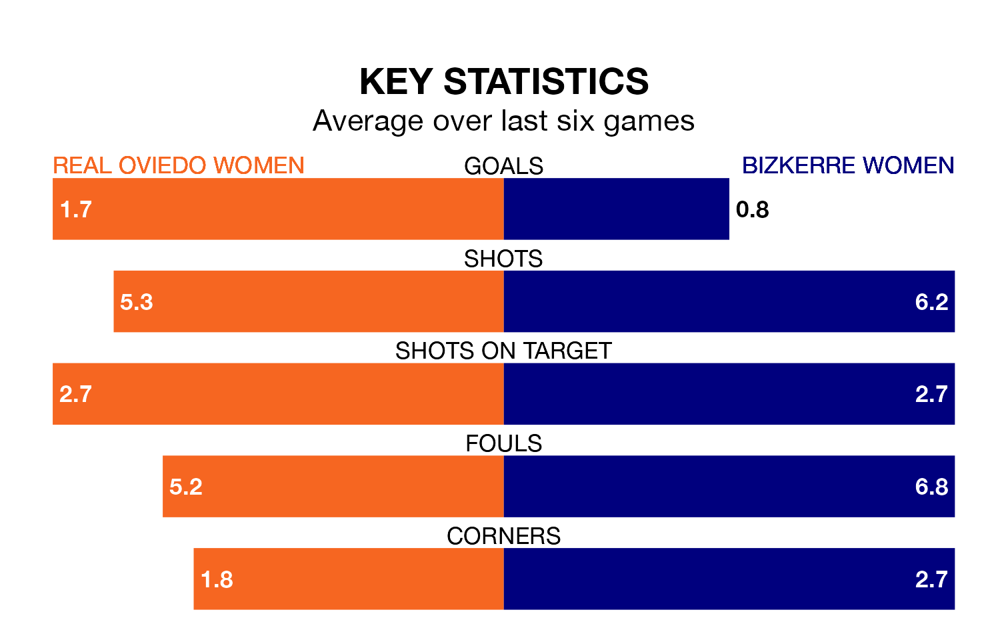

Bizkerre Women travel looking to secure a first win in 11 Segunda Federación Femenina games against Real Oviedo Women on Sunday.
Bizkerre have lost six and drawn four matches since they last earned three points – against Espanyol II Women on November 19.
They face an Oviedo Women side who have won six and drawn one over that time.
Bizkerre are zero in the table after 20 games, of which they have won two and drawn eight, earning 14 points.
Oviedo Women are six places behind the visitors in sixth, with 12 wins and four draws putting them on 40 points.
With 15 goals in 20 games so far this season, Bizkerre are the league's-13th-lowest scorers with 0.8 goals per game. And they are conceding more than average, letting in 27 goals at a rate of 1.4 per game.
The home team, meanwhile, are above average scorers, with 1.4 goals per game, compared to a league average of 1.3. They have conceded 0.9 goals per game.
Oviedo Women's last match was on February 10, a 3-0 loss against Huesca Women.
Bizkerre drew 1-1 with Real Madrid II Women last time out, also on February 10, with on the scoresheet.
Updated: 12:06 (UTC), 15/02/24